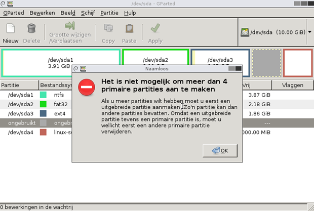
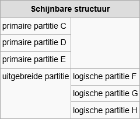
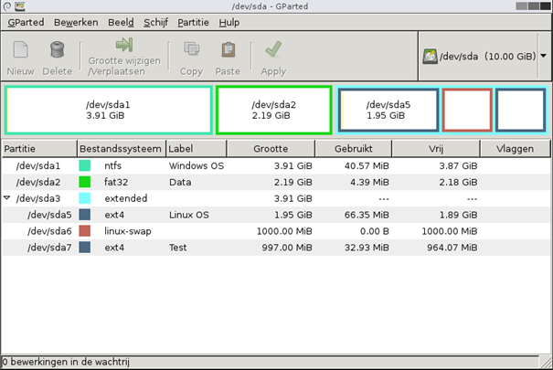
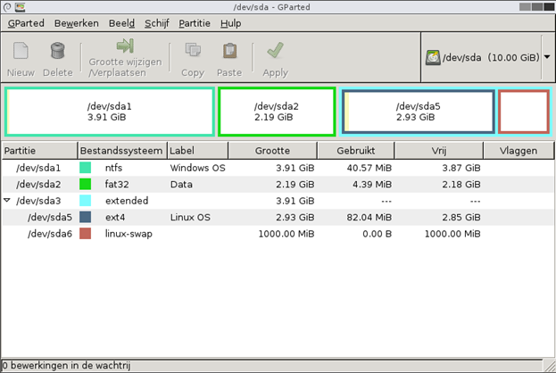

Op /dev/sda staan vier primaire partities en er is nog ongebruikte ruimte over. Je gaat na
waarom je daar niets meer in kwijt kan, en deelt de schijf daarna opnieuw in met een extended partitie.
Selecteer de ongebruikte ruimte en probeer er een nieuwe partitie in te maken. GParted meldt dat het niet meer dan vier primaire partities kan aanmaken.

De MBR-partitietabel is 64 bytes groot en bevat vier beschrijvingen van 16 bytes, en die vier zijn bezet. De uitleg staat op Partitietabellen.
Eén van de vier plaatsen krijgt het type extended, in GParted Uitgebreide partitie. Zo'n partitie draagt zelf geen bestandssysteem: ze is een houder waarin je logische partities aanmaakt, en daarvan is het aantal niet beperkt.

Je hebt vijf partities nodig: twee voor Windows, twee voor Linux en een vijfde om iets in uit te proberen. Met vier primaire lukt dat niet, met drie primaire, één extended en drie logische wel.
/dev/sda3 en /dev/sda4.
/dev/sda5, want 1 tot 4
blijven voorbehouden voor de tabelplaatsenDe testpartitie heeft haar werk gedaan en de Linux-partitie mag groter. Binnen de extended partitie kan je die ruimte doorschuiven.

/dev/sda5 heeft de ruimte van de gewiste partitie
opgenomen